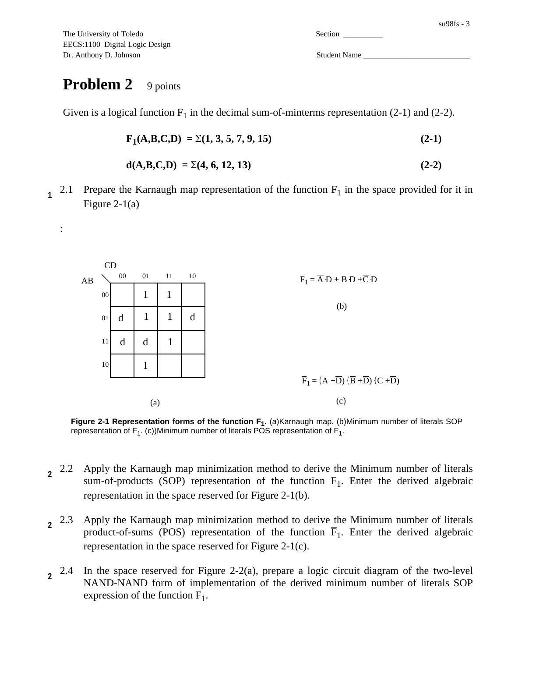
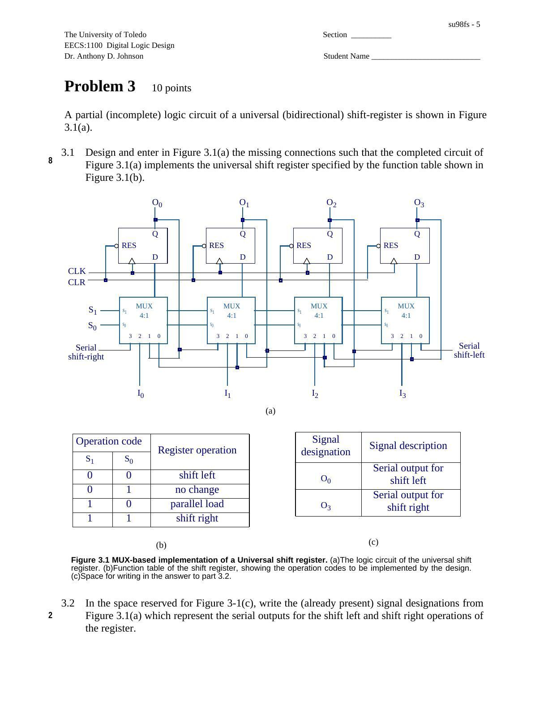
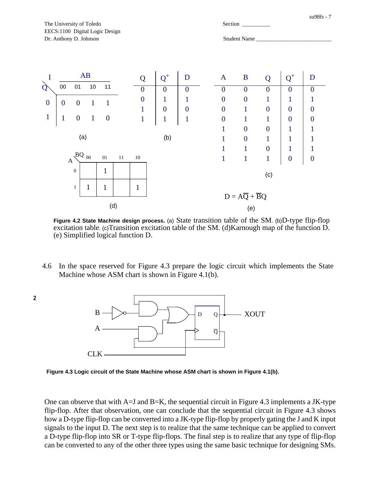

· EEM211
EEM211 Sayısal Mantık Tasarımı: Sayısal Mantık Finali ve Yanıtları (University of Toledo)
EEM211 – Sayısal Mantık Tasarımı · 13.02.1998 · 18.10.2026
University of Toledo EECS:1100 Digital Logic Design dersinden Dr. Anthony D. Johnson imzalı, çözümleri üzerinde gösterilmiş final sınavı. Kaynak dosya su98fs.pdf; PDF oluşturma tarihi 13 Şubat 1998, son değiştirilme tarihi 17 Ocak 1999. Yedi sayfalık belge yazının sonunda indirilebilir. Öğrenci bilgisi alanları boş bırakılmıştır.
Bu içerik üçüncü taraf bir kaynağa aittir; arşiv ve nostalji amacıyla kaynak belirtilerek paylaşılmıştır. Hak sahibinin talebi hâlinde kaldırılır.
1. Sayı tabanları ve ikinin tümleyeni
İlk soruda üç sayının onluk karşılığı, sekiz bitlik ikili gösterimi ve negatifinin ikili gösterimi istenir. Okunurluk için bitler dörderli ayrıldı.
| Kaynaktaki sayı | Onluk karşılık | x, 8 bit | −x, 8 bit |
|---|---|---|---|
| −30 (10 tabanı) | −30 | 1110 0010 | 0001 1110 |
| 134 (8 tabanı) | 92 | 0101 1100 | 1010 0100 |
| −3D (16 tabanı) | −61 | 1100 0011 | 0011 1101 |
Yalnız toplayıcı kullanarak x(2)−x(1) işlemi yapılır: 92−(−30)=122. İkili işlem 0101 1100 + 0001 1110 = 0111 1010 sonucunu verir. Çözümler onluk karşılıklarıyla kontrol edildi.
2. Karnaugh haritası ve iki seviyeli gerçekleştirme
Verilen fonksiyon F1(A,B,C,D)=Σ(1,3,5,7,9,15), belirsiz durumlar d(A,B,C,D)=Σ(4,6,12,13). Öğrenciden haritayı doldurması, en az literal içeren toplam-çarpım ve çarpım-toplam ifadelerini elde etmesi, NAND–NAND ve NOR–NOR devrelerini çizmesi istenir.
Kaynak yanıtında F1=A′D+BD+C′D yazılıdır. Çarpım biçimindeki ifade tümleyen fonksiyon içindir: F1′=(A+D′)(B′+D′)(C+D′). Üst çizgiler metne aktarılırken ′ işaretiyle gösterildi. Verilen altı minterm ve altı zorunlu sıfır için sonuçlar doğrulandı.

3. Universal bidirectional shift register
Dört D flip-flop ve her flip-flop önünde bir 4:1 MUX kullanılmıştır. Eksik bağlantıların aşağıdaki çalışma tablosunu sağlayacak şekilde tamamlanması istenir.
| S1 | S0 | İşlem |
|---|---|---|
| 0 | 0 | Sola kaydır |
| 0 | 1 | Durumu koru |
| 1 | 0 | Paralel yükle |
| 1 | 1 | Sağa kaydır |
Çizimde sola kaydırmanın seri çıkışı O0, sağa kaydırmanın seri çıkışı O3 olarak verilir. I0–I3 paralel girişlerdir; CLK ve CLR ortak kontrol hatlarıdır.

4. Moore durum makinesi ve flip-flop dönüşümü
A ve B girişleri olan makine pozitif kenarda tetiklenen D flip-flop ile gerçekleştirilir. ASM şemasından geçiş tablosu, D uyarma tablosu, geçiş-uyarma tablosu ve Karnaugh haritası çıkarılır.
| Şimdiki Q | AB=00 | AB=01 | AB=10 | AB=11 |
|---|---|---|---|---|
| 0 | 0 | 0 | 1 | 1 |
| 1 | 1 | 0 | 1 | 0 |
Tablodaki değerler sonraki durum Q⁺ değerleridir. D giriş denklemi D=AQ′+B′Q, çıkış XOUT=Q olur. A=J ve B=K alınırsa devre JK flip-flop davranışını verir. Aynı durum makinesi tasarım yöntemiyle diğer flip-flop türleri arasında dönüşüm yapılabileceği belirtilir.
